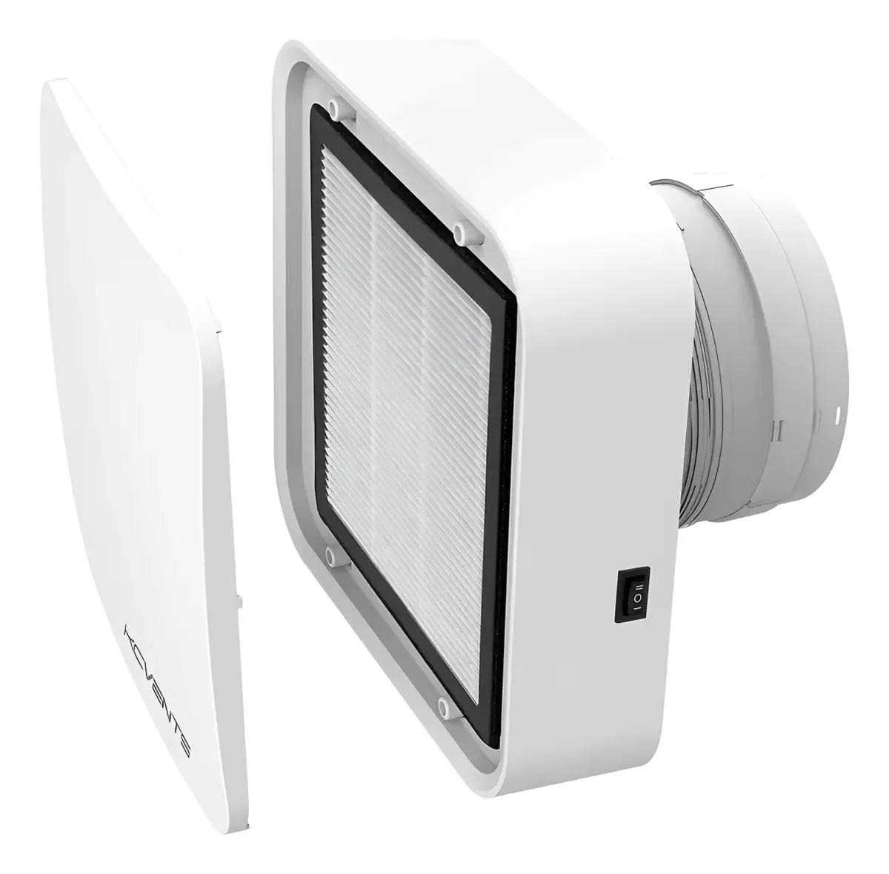
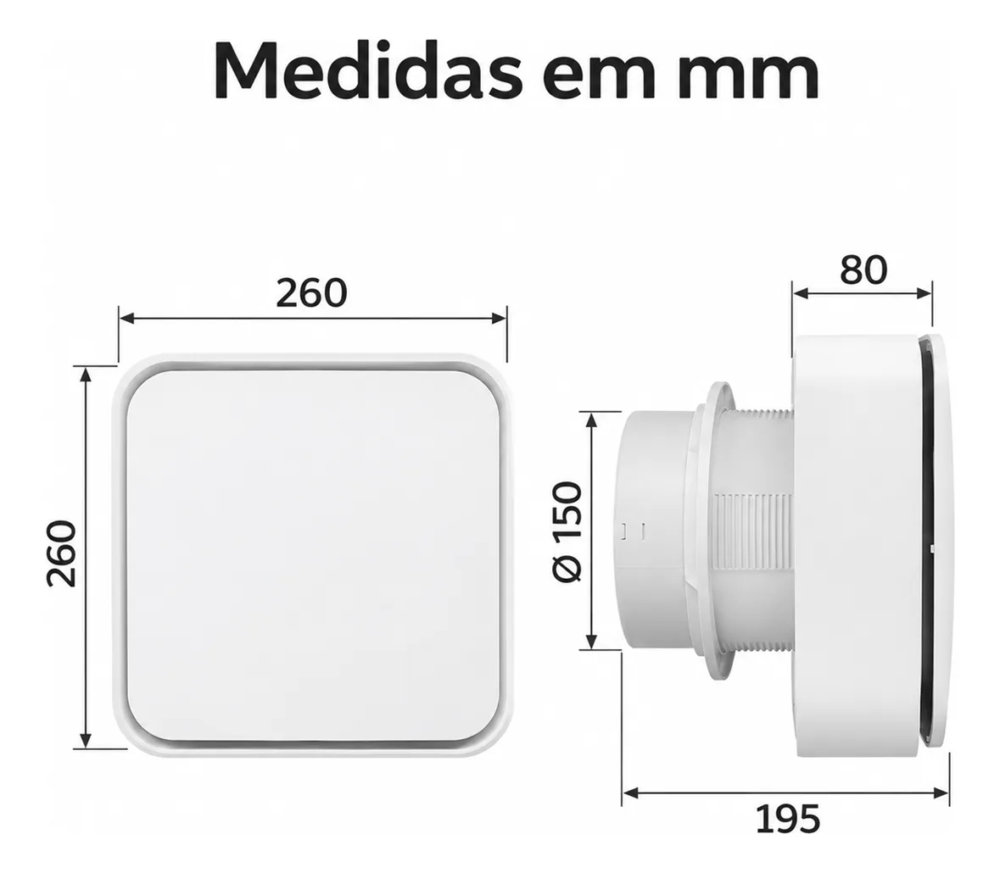
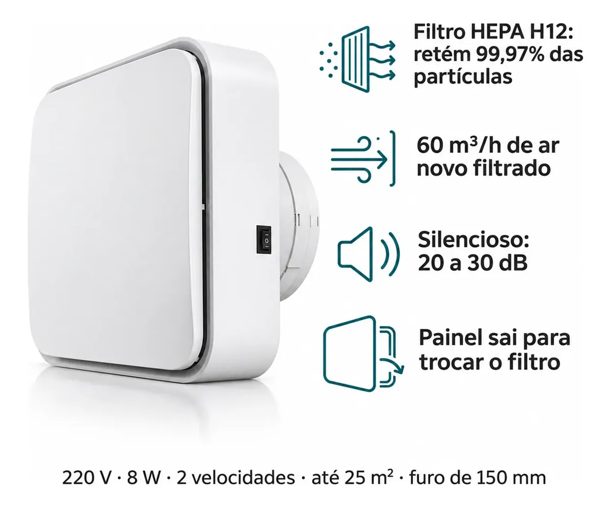
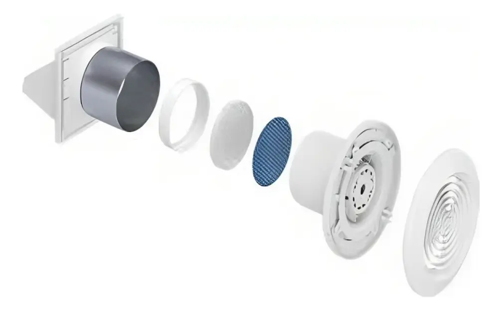
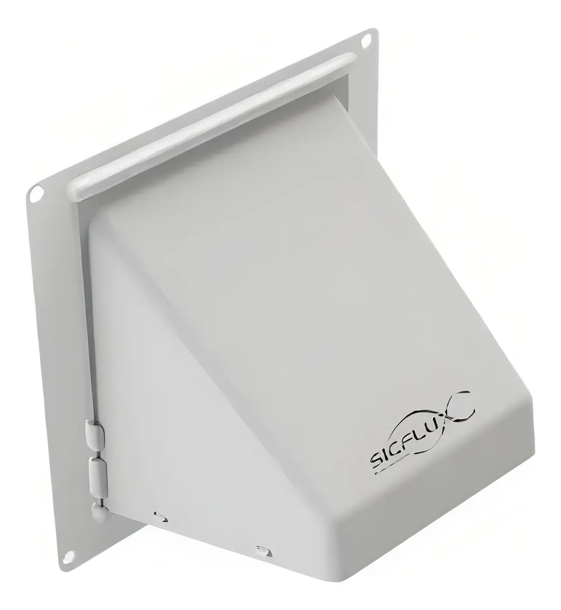
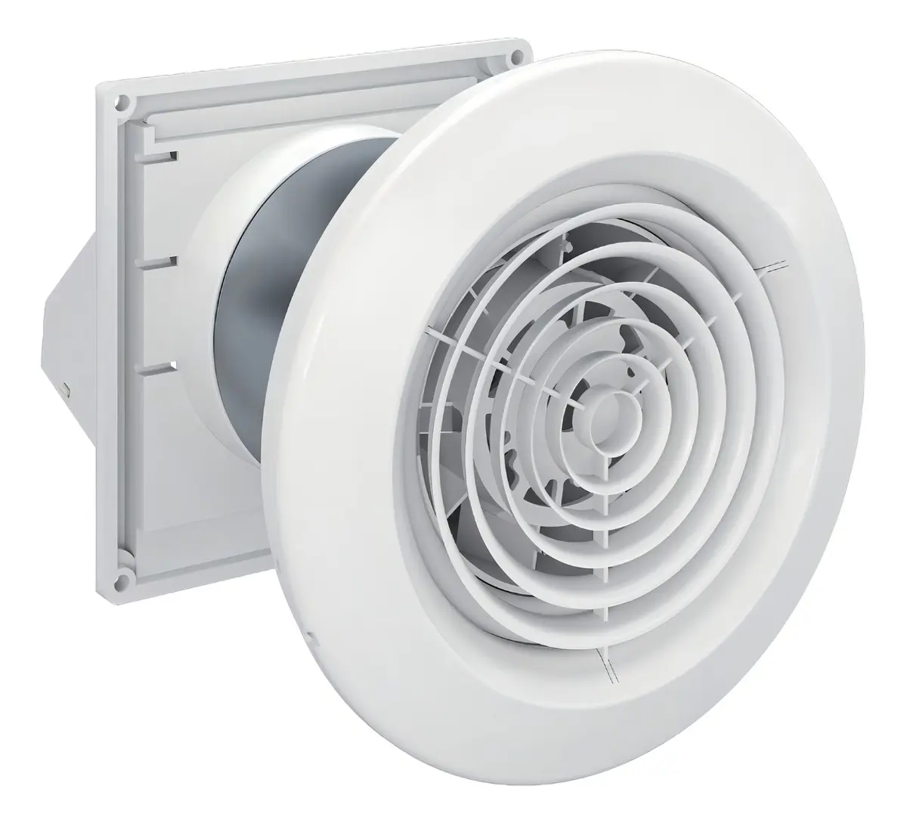
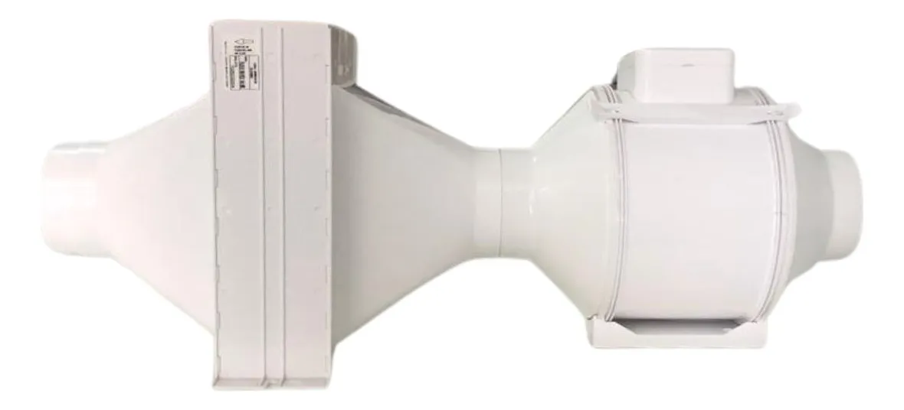
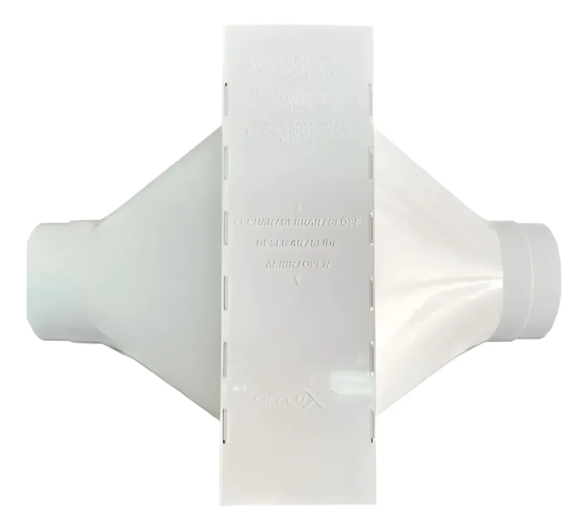
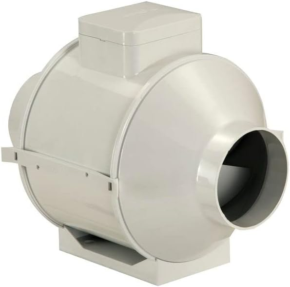

Рио · бризеры · доставка по Бразилии
Бризер в Рио: HEPA-фильтр есть только у одного
В Бразилии такие приборы продают как renovador de ar или insuflador de ar com filtro. Искал на Mercado Livre и Amazon.com.br. Российских Tion и настенных Xiaomi на Mercado Livre нет. С местной доставкой нашлись три варианта, и два из них есть только на Mercado Livre. Amazon пригодится для трансформатора, вентилятора и сменных фильтров. Ближе всего к бризеру настенный KCVents KC-PM06HB1 с фильтром класса H12 (≥ 99,5 %) за R$ 1 138,90, но он работает только от 220 В. Дешёвый и проверенный Sicflux Splitvent за R$ 304 подключается к 127 В, но его фильтр M5 задерживает лишь 40–60 % мелкой пыли, поэтому полной фильтрации он не даёт. Отопитель, как у российских бризеров, в Рио не нужен. Важнее другое: летом в комнату пойдёт тёплый и очень влажный воздух, и его придётся охлаждать и осушать сплиту.
R$ 1 202,70KCVents с HEPA H12 (ML) + трансформатор 127→220 В (Amazon)
R$ 304Sicflux Splitvent: 127/220 В, фильтры G4 + M5, 1000+ продаж
≈ 560 Втстолько тепла добавит сплиту приток 60 м³/ч в феврале, ≈ 21 % сплита на 9000 BTU
0,68 л/чстолько воды сплиту придётся забрать из этого же воздуха
1Что такое бризер и что меняется в Рио
Бризер меняет воздух, очиститель гоняет его по кругу
улица→отверстие в стене→фильтры→вентилятор→комната
Бризер — это маленькая приточная вентиляция в наружной стене. Вентилятор тянет уличный воздух через фильтры, и в комнату идёт свежий воздух при закрытых окнах. Комната перестаёт быть душной, потому что выдыхаемый воздух вытесняется наружу через щели.
Очиститель воздуха с HEPA прогоняет воздух комнаты через фильтр и чистит его лучше, но свежего воздуха не добавляет. Сплит тоже гоняет воздух комнаты по кругу. Поэтому Sicflux и продаёт Splitvent как приток к комнате со сплитом.
Что в Рио иначе, чем в России
Отопитель не нужен. В российских бризерах он греет зимний воздух. В Рио даже в самом холодном месяце средний минимум около 19 °C.
Нужно охлаждать и осушать приток. В феврале средняя температура в Рио 28,3 °C при влажности 79 %. Такой воздух сплит должен остудить и вынуть из него воду (расчёт в разделе 5).
Сеть 220/127 В. Обычная розетка в Рио на 127 В, 220 В есть между двумя фазами, на 220 В бывает подключён сплит. От этого зависит, какой прибор можно поставить без трансформатора.
Отверстие в фасаде. В кондоминиуме и в съёмной квартире на это нужно разрешение (подробнее в разделе 6).
2Что купить с доставкой в Рио
Проверил Mercado Livre и Amazon.com.br с адресом доставки в Рио. KCVents и Splitvent продаются только на Mercado Livre, на Amazon их нет. С Amazon выгоднее взять трансформатор, вентилятор Sicflux Maxx 100 и сменные фильтры. Все продавцы в Бразилии, пошлины нет. На ML возврат бесплатный 30 дней, на Amazon 7 дней, у товаров самого Amazon дольше. Стоимость и срок доставки ML считает по CEP в карточке.
Ближе всего к бризеру



KCVents KC-PM06HB1, настенный с HEPA
фильтр H12, ≥ 99,5 %
только 220 В
38 / 60 м³/ч
отверстие 150 мм
новинка, отзывов нет
R$ 1 138,90 или 10 × R$ 113,89 без процентов
- Поток: 38 и 60 м³/ч, две скорости, комната до 25 м²
- Шум: 20–30 дБ по продавцу, условия замера не указаны
- Мощность: 8 Вт, мотор AC без щёток
- Размер: панель 260 × 260 мм, глубина с патрубком 195 мм, 2,6 кг
- Фильтр: передняя панель снимается без инструментов, в городе продавец советует проверять фильтр раз в 6 месяцев
- Гарантия: 12 месяцев, продавец AIELLO — официальный магазин на ML с высшим рейтингом
В описании противоречие. Написано «HEPA H12» и тут же «99,97 % частиц от 0,3 мкм». В действующей норме EN 1822 класса H12 нет: 99,5 % — это E12, а HEPA начинается с H13 (≥ 99,95 %). Цифра 99,97 % — американское определение HEPA. Рассчитывайте на 99,5 %. Это всё равно лучший фильтр среди вариантов здесь.
Питание. Если у сплита рядом розетка на 220 В, подключайте к ней, электрик проверит мультиметром. Если нет, нужен трансформатор 127→220 В:
Force Line с Amazon за R$ 63,80.
Только на Mercado Livre. На Amazon по запросам «kcvents», «renovador de ar», «renovador de ar 150mm», «recuperador de calor parede» такого прибора нет.
Дёшево и проверено



Sicflux Splitvent, приток к комнате со сплитом
127/220 В
G4 + M5, не HEPA
54 м³/ч на двоих
отверстие 100 мм
4,7 ★, 102 отзыва
R$ 304 или 12 × R$ 29,74
- Поток: 54 м³/ч с фильтрами G4 + M5 (на 2 человек), 93 м³/ч только с G4 (на 4 человек), по таблице Sicflux по норме NBR 17037:2023
- Шум: 33 дБ на расстоянии 3 м
- Мощность: 23 Вт при 127 В, 18,7 Вт при 220 В
- Размер: решётка Ø 189 мм, 0,95 кг
- Как включается: его подключают так, чтобы он работал вместе со сплитом
- Продажи: больше 1000, доставка Full со склада Mercado Livre, продавец TRIPTIC
Фильтр M5 задерживает 40–60 % частиц размером 0,4 мкм, то есть примерно половину мелкой пыли пропускает. Для полной фильтрации к нему нужен ещё очиститель воздуха с H13 в комнате.
Где ещё. На Amazon Splitvent нет, там продаются только сменные фильтры G4 к нему. Есть у Leroy Merlin (продавец Vetron), но цена на странице не загрузилась. На Magazine Luiza поиск Google показывает от R$ 253,93, но сайт не открылся, так что эта цена не проверена.
Про «обязательно по закону». Sicflux пишет, что закон 13.589/2018 требует приток к каждому сплиту. По тексту закона это требование к зданиям общественного и коллективного пользования. Квартир оно не касается.
Для подвесного потолка



Sicflux Maxx 100 + Filbox Red 100 G4 + F8
G4 + F8, 90–95 %
только 220 В
до 130 м³/ч через фильтр
нужен монтажник
R$ 1 100 или 12 × R$ 106,78
- Как ставят: над подвесным потолком в коридоре или санузле: решётка на фасаде → фильтр-бокс → вентилятор → воздуховод 100 мм → решётка в комнате. Так можно развести воздух на две комнаты
- Вентилятор Maxx 100: 2 скорости, 56–77 Вт, 29 / 38 дБА, как приток Sicflux велит работать на низкой скорости
- Фильтр-бокс: площадь фильтра 400 см², до 130 м³/ч при сопротивлении 25 мм вод. ст., 265 × 305 × 395 мм
- Гарантия: вентилятор 12 месяцев, фильтр-бокс 90 дней
- Продавец: Move Ar, авторизованный дистрибьютор Sicflux, 3 продажи
По частям дешевле на R$ 199,76. Вентилятор Maxx 100 на 220 В на Amazon стоит R$ 260,24, доставка бесплатная, отправляет Amazon. Фильтр-бокс Filbox Red 100 с G4 + F8 на Mercado Livre — R$ 640. Вместе R$ 900,24.
Питание 220 В. Мотор берёт 56–77 Вт. Трансформатор Force Line на 500 ВА его потянет, Unitel на 42 Вт — нет. Можно и проложить линию 220 В, раз всё равно нужен монтажник.
Если рядом нет 220 В: автотрансформатор Force Line 500 ВА
R$ 63,80 Amazon, продаёт и отправляет Amazon, 4,4 ★ (187 отзывов)
Включается в обычную розетку, переводит 120 В в 220 В и обратно. 500 ВА хватит и на KCVents (8 Вт), и на вентилятор Maxx 100 (до 77 Вт). При перегрузке термопредохранитель отключает его около 130 °C и включает обратно, когда корпус остынет до 70 °C. Вилка и розетка по стандарту NBR 14136.
Альтернатива на Mercado Livre — Unitel 60 ВА за R$ 70,84. Он дороже, держит только до 42 Вт и, по описанию продавца, без термозащиты.
3Сравнение
| Модель | Фильтр | Поток | Шум | Питание | Монтаж | Цена |
|---|
| KCVents KC-PM06HB1 | H12, ≥ 99,5 % | 38 / 60 м³/ч | 20–30 дБ
по продавцу | 220 В | отверстие 150 мм в наружной стене | R$ 1 138,90, ML
+ R$ 63,80 трансформатор, Amazon |
| Sicflux Splitvent | G4 + M5, 40–60 % | 54 м³/ч | 33 дБ на 3 м | 127 или 220 В | отверстие 100 мм рядом со сплитом | R$ 304, ML
на Amazon нет |
| Sicflux Maxx 100 + Filbox G4 + F8 | G4 + F8, 90–95 % | до 130 м³/ч | 29 / 38 дБА | 220 В | воздуховоды над подвесным потолком | R$ 1 100 комплектом, ML
R$ 900,24 по частям: Amazon + ML, + монтаж |
Итог. Нужна полная фильтрация в одной комнате — берите KCVents и подключайте к 220 В. Риск в том, что это новинка без отзывов, но ML даёт 30 дней на бесплатный возврат. Если важнее цена и проверенная модель, ставьте Splitvent на 127 В и добавьте в комнату очиститель воздуха с H13: свежий воздух даст Splitvent, мелкие частицы дочистит очиститель. Канальный комплект Sicflux имеет смысл, если в квартире есть подвесной потолок и вы делаете ремонт.
4Что значат классы фильтров
| Класс | Норма | Сколько задерживает | Где стоит |
|---|
| G4 | EN 779 | ≥ 90 % крупной тестовой пыли по массе, мелкие частицы не нормируются | Splitvent, Filbox: первая ступень |
| M5 | EN 779 | 40–60 % частиц 0,4 мкм | Splitvent |
| F8 | EN 779 | 90–95 % частиц 0,4 мкм, минимум 55 % | Filbox Red 100 |
| E12 (в описании «H12») | EN 1822 | ≥ 99,5 % самых проникающих частиц | KCVents |
| H13 | EN 1822 | ≥ 99,95 % самых проникающих частиц, настоящий HEPA | в местных бризерах не нашёл, есть в очистителях воздуха |
EN 779 официально заменена на ISO 16890, но бразильские производители пишут классы по-старому. Самые проникающие частицы — около 0,1–0,3 мкм. Хуже всего фильтр ловит именно их, поэтому по ним HEPA и проверяют.
5Сколько добавит сплиту
Свежий воздух с улицы придётся охладить до комнатной температуры и осушить. Посчитал для февраля, самого жаркого месяца: среднесуточно 28,3 °C и 79 % влажности по нормам INMET. В комнате взял 24 °C и 50 %.
Энтальпия уличного воздуха 28,3 °C / 79 %: 77,6 кДж/кг, влага 19,2 г на кг сухого воздуха
Энтальпия комнатного воздуха 24 °C / 50 %: 47,8 кДж/кг, влага 9,3 г/кг
Поток 60 м³/ч × плотность 1,135 кг/м³ = 68,1 кг/ч = 0,0189 кг/с
Тепло: 0,0189 × (77,6 − 47,8) = 0,564 кВт ≈ 1924 BTU/ч, это 21 % сплита на 9000 BTU/ч
Из них на осушение 0,48 кВт (85 %), на охлаждение всего 0,08 кВт
Вода: 68,1 кг/ч × (19,2 − 9,3) г/кг = 0,68 л в час
38 м³/ч357 Вт · 0,43 л/ч
54 м³/ч507 Вт · 0,61 л/ч
60 м³/ч564 Вт · 0,68 л/ч
- Почти вся нагрузка — влага. Воздух на улице ненамного теплее комнатного, но несёт вдвое больше воды. Если сплит маленький или работает на минимуме, влажность в комнате может подняться. Тогда помогает режим «Dry» на сплите.
- Можно меньше. Для двоих Sicflux считает достаточным 54 м³/ч. На низкой скорости KCVents (38 м³/ч) нагрузка меньше примерно на треть.
- Расчёт ориентировочный. Он сделан по среднесуточным данным февраля. Днём нагрузка выше, ночью ниже.
- Точка росы уличного воздуха около 24 °C. Всё, что в комнате холоднее, будет запотевать от притока. Поэтому решётку бризера не ставят туда, куда дует холодный воздух сплита.
6Перед покупкой
1Разрешение на отверстие
В кондоминиуме собственник обязан «не менять форму и цвет фасада» (Гражданский кодекс, ст. 1.336, III). Решётка 150 мм на фасаде под это может попасть, поэтому сначала спросите síndico.
В съёмной квартире жилец не может менять квартиру «без предварительного письменного согласия» хозяина (Lei 8.245, ст. 23, VI). Нужно письменное согласие.
2Розетка 220 В
Light подаёт в Рио 220/127 В: обычная розетка 127 В, между двумя фазами 220 В. Если сплит включён в 220 В, электрик поставит рядом розетку для KCVents. Иначе — трансформатор Force Line с Amazon за R$ 63,80.
3Где сверлить
Нужна наружная стена той комнаты, где спите. KCVents: отверстие 150 мм, панель 26 × 26 см. Splitvent: 100 мм, решётка Ø 19 см. Сверлят алмазной коронкой. Решётку не ставят под струю холодного воздуха сплита, иначе она будет запотевать.
4Сменные фильтры
Цену сменного фильтра KCVents продавец не указал. Спросите в вопросах на ML до покупки, есть ли он в продаже и сколько стоит. Фильтр F8 к Filbox 100–200 на ML стоит R$ 219. На Amazon: G4 к Splitvent — 10 штук за R$ 138,69 плюс доставка R$ 29,45, G4 и M5 к Filbox — по R$ 43,51, а F8 там нет.
5Возврат
На ML у всех трёх карточек возврат бесплатный в течение 30 дней, на Amazon у Maxx 100 — 7 дней. Для новинки KCVents 30 дней на ML — главная страховка: проверьте шум на низкой скорости в первые дни.
6Если сверлить нельзя
Остаётся очиститель воздуха с фильтром H13 и проветривание. Свежего воздуха он не даст, но мелкую пыль в комнате уберёт. Его можно подобрать отдельно.
7Что не взял и почему
Рекуператор 100 мм с Wi-Fi, Amazon Global
R$ 2 364,66 с уже включённой пошлиной, доставка R$ 8,90. Едет из-за рубежа, гарантию и возврат придётся решать с иностранным продавцом. Класс фильтра в описании не указан. Керамический теплообменник возвращает в основном тепло, а в Рио 85 % нагрузки от притока — это влага. Карточка на Amazon
Остальное
- Tion, Xiaomi Mijia Fresh Air. По запросам «tion breezer» и «xiaomi mijia fresh air» на Mercado Livre нет ни одного бризера, у Xiaomi там только очистители воздуха.
- Sicflux FH с фильтром G4 + F8. Коммерческий приток: 220 В, 74 Вт, 48 дБА на 3 м, корпус 10 кг. Для квартиры шумно и громоздко. Sicflux FH
- ERV от LG, Daikin, Mitsubishi. Рекуператоры с воздуховодами под проект, цену дают только по запросу, воздуховоды обычно прячут в подвесной потолок. LG ERV в Бразилии
- «Ventilador de entrada de ar fresco» на ML. Помечены «Internacional»: цена без пошлины, итог выходит намного дороже.
- Вытяжки Ventokit и Sicflux Arkit. Их тоже называют «renovador de ar», но это вытяжки: они выдувают воздух наружу, а не подают его в комнату.
8Источники
- Mercado Livre, карточки (цена, продавец, тип доставки, характеристики, описание): KCVents KC-PM06HB1, Sicflux Splitvent, Maxx 100 + Filbox Red 100, Filbox Red 100 (ficha técnica), фильтр F8 для Filbox, автотрансформатор Unitel. Выдачи: «renovador de ar filtro hepa», «renovador de ar parede», «tion breezer», «xiaomi mijia fresh air».
- Sicflux: Splitvent (поток по NBR 17037:2023, шум, мощность, размеры), FH с G4/F8, Filbox Red.
- Amazon.com.br с адресом доставки CEP 22780-760, карточки (цена, продавец, кто отправляет, доставка, описание): Sicflux Maxx 100, 220 В, Force Line 500 ВА, фильтры G4 к Splitvent, фильтр M5 к Filbox, фильтр G4 к Filbox, рекуператор 100 мм (Amazon Global, «Taxas de importação já incluídas»). Поиски без нужных товаров: «sicflux» (Splitvent нет), «kcvents», «renovador de ar», «insuflador de ar com filtro», «recuperador de calor parede ventilação».
- Другие магазины: Leroy Merlin, Splitvent (продавец Vetron, цена не загрузилась); Magazine Luiza, поиск «splitvent sicflux» (ошибка 403, цена только из выдачи Google).
- Классы фильтров: MANN+HUMMEL, EN 1822 (E12 ≥ 99,5 %, H13 ≥ 99,95 %); APC Filters, таблица EN 779 (G4, M5, F7–F9).
- Климат: таблица по нормам INMET, станция Saúde, 1981–2010: февраль 28,3 °C среднесуточно, влажность 79 %; июль, средний минимум 18,7 °C. Энтальпия и влагосодержание посчитаны по формуле Бака для давления насыщенного пара при давлении 101,325 кПа.
- Сеть: Light, «Ligação nova» — номинальное напряжение 220/127 В.
- Законы: Código Civil, ст. 1.336, III; Lei 8.245/1991, ст. 23, VI; Lei 13.589/2018, ст. 1.